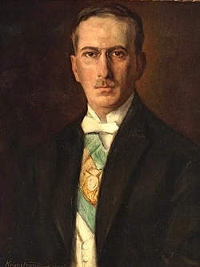

Artigo em destaque
O governo Artur Bernardes iniciou-se em 15 de novembro de 1922, após a vitória do líder do Partido Republicano Mineiro (PRM) na eleição à Presidência da República do Brasil. Ele durou até 15 de novembro de 1926, quando transmitiu o poder a Washington Luís. Artur Bernardes, representante da política do café com leite e dos últimos anos da Primeira República, governou quase continuamente sob estado de sítio, ancorado na classe política, oligarquias rurais e urbanas e altas patentes das Forças Armadas contra uma série de revoltas militares tenentistas.
Nas cidades, especialmente no Rio de Janeiro, o governo Bernardes foi impopular devido à inflação e à moeda depreciada pelos esquemas de valorização do café. A administração cortou despesas públicas, transformou o Banco do Brasil num banco emissor e buscou um empréstimo com banqueiros britânicos. As negociações foram infrutíferas, mas muitas das recomendações da missão de especialistas financeiros, liderada por Edwin Montagu, foram seguidas. Ao final de 1924 o governo expeliu os paulistas da direção da economia, abandonou o apoio federal à defesa do café e, através de uma política contracionista e recessiva, controlou o câmbio e a inflação às custas da produção industrial. (Leia mais...)
Artigo selecionado para o dia 15 de novembro de 2023.
O artigo em destaque é escolhido mensalmente pela comunidade da Wikipédia em português.
Para ver outros artigos em destaque, acesse a lista de artigos em destaque.